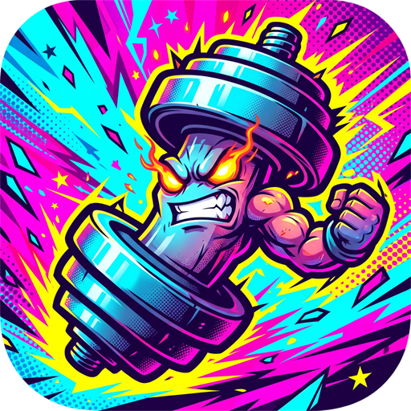

Gymcall
알람을 끄는 순간이
"Go"가 되는 아침 운동 알람
gymcall.json-server.win · github.com/manamana32321/kirothon-team-008

실제 대화에서 가져온 예시. 이름은 지움.
"늦잠", "이제 일어남"
만날 곳을 따로 맞춤
두 사람이 서로 깨운다. 한쪽 문제가 아니다
2026-08-14 ~ 11-14, 오전 6~11시 메시지 340줄. 키워드 정규식으로는 2년간 22일만 잡혔다 ("동운 기?", "덩운..", "웅덩?"을 놓침). 원문은 레포에 없음.
| 지금 (카톡·전화) | 운동기 | 바뀌는 것 |
|---|---|---|
| 알람을 혼자 끈다 | Go / No Go가 곧 알람 해제 | 끄는 순간 그룹 전체에 1초 안 공유 |
| "ㅇㄷㄱ?" 카톡 | 친구 카드 그리드 | 누가 일어났는지 한 화면에서 보임 |
| 전화로 깨우기 | 찌르기 (여러 명, 연타) | 받은 화면이 세게 출렁이고 진동 |
| 기본 알람음 | 친구가 찍은 10초 클립 | 응답 안 하면 여러 친구 목소리가 한꺼번에 |
| 서로 눈치 | 10분 뒤 자동 무응답, 가상 벌금 | 약속의 무게 (실제 결제 없음) |
그룹 만들고 QR로 친구 초대
내 카드 눌러 "야 일어나라" 10초 클립
08:00 파장이 퍼지고 친구 목소리가 울림
Go 누르면 소리 멈춤, 모두에게 1초 안 공유
안 일어난 친구 카드 골라 찌르기 연타
.kiro/specs/gymcall 본 기능, gymcall-meetup 지도, gymcall-wakeup 깨우기. 요구사항 번호를 작업마다 연결. 기획이 바뀌면 spec부터 고침
product, tech, structure, design, deploy, worktree, behavior. 개인 Claude Code 하네스(karpathy 규칙, 워크트리 규칙)를 Kiro 형식으로 이식
secret-guard 키 유출 차단 (실제 차단 확인) · doc-sync 코드 바뀌면 BUILD_REPORT 갱신 요구 · main-branch-guard · visual-check 화면 변경은 사람 눈 확인
작업 2·3·4를 서브에이전트 3개가 각자 워크트리에서 동시에 구현, 충돌 0. 카톡 3개월치를 에이전트가 직접 읽어 근거 수치화
infra/k8s 동기화, Image UpdaterPR 30여 개 · 모두 워크트리 브랜치 → PR → 사람 머지
· 브라우저로 쓰면 탭이 열려 있어야 울림
· 브라우저마다 녹화 형식이 달라 Chrome 기준
· 벌금은 가상 포인트
· 위치는 서버 메모리, 서버 1대 전제
· 비밀번호 재설정 없음
· 실제 운동 친구 그룹에서 2주 사용, 답장 대기 57% → 몇 %로 줄었는지 측정
· iOS 앱 셸
· 기상 스터디, 러닝 크루로 넓히기
ㅇㄷㄱ? 이제 묻지 말고, Go.